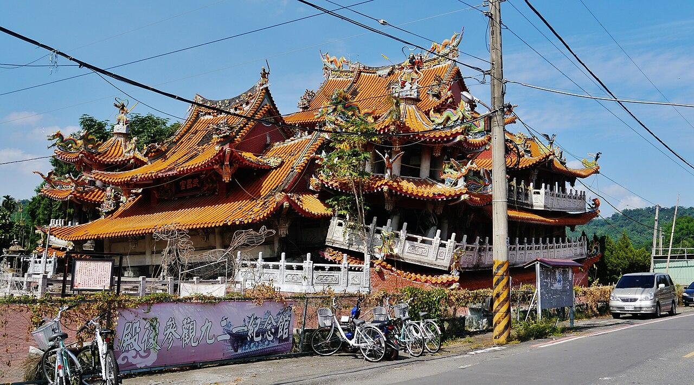
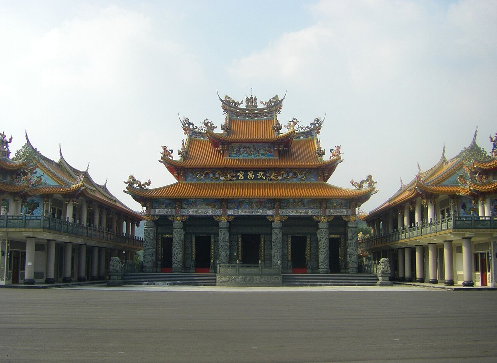

ZONE 03 信仰與重建
攝影：Zairon／CC BY-SA 4.0
武昌宮與九二一
倒下的廟沒有被拆掉。它被留下來，替整座小鎮記住那一夜。
1999 年 9 月 21 日 凌晨 1 時 47 分
那一夜，整座廟坐到了地上
武昌宮主祀玄天上帝，是集集重要的信仰中心。1999 年 9 月 21 日凌晨，以集集為震央的大地震發生，舊廟主體倒塌，屋頂幾乎整個壓落在地面上。所幸供奉在正殿的玄天上帝神像，在信徒冒險搶救下沒有受損。
地震後，舊廟沒有被拆除，而是原地保留，成為震災的紀念遺址；地方居民則集資在旁邊興建新廟。
集集九二一大地震的震央所在，因此也被稱為「集集大地震」。
原地保留倒塌的舊廟沒有拆除，成為可以親眼看見的震災遺址。
互動｜拖動看看
同一個信仰，兩座廟
左邊是九二一倒塌後保留的舊廟，右邊是震後重建的新廟。左右拖動中間的把手比較看看。

震災遺址（舊廟） 重建新廟兩張照片拍攝角度與年份不同（2016 年／2013 年），僅作對照示意。攝影：Zairon／CC BY-SA 4.0；阿文／CC BY-SA 3.0
策展人的話
為什麼要留下一座倒塌的廟？
大部分的災後重建，會把傷痕清乾淨。集集選擇讓新舊兩座武昌宮並列：一邊是歪斜壓落的屋頂，一邊是重新雕琢的樑柱與交趾陶。
站在兩座廟之間，你同時看見災難的力量，與一群人重新站起來的決心。這也是這個展覽想說的事：記得，是重新開始的一部分。
參觀震災遺址時請保持安靜、不要攀爬，這裡也是信徒的信仰場所。